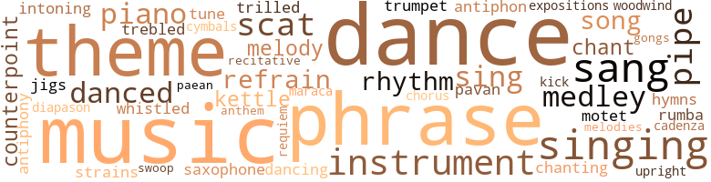
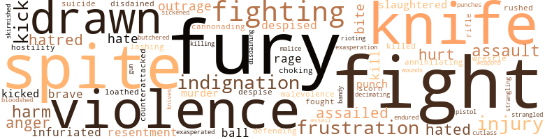
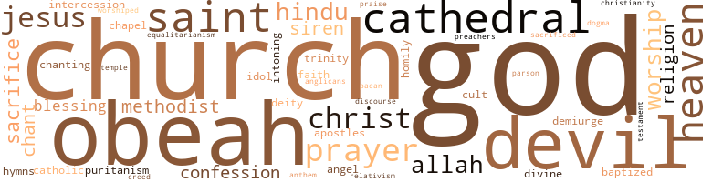

Where the Humming Bird Flies, by Hercules, Frank (1961)
138 music-related terms matched in this text.
Most frequent terms in this topic: music (11); dance (10); sang (8); singing (8); theme (7)
antiphon.n.01
Definition: a verse or song to be chanted or sung in response
| word | sentence |
|---|---|
| antiphon | So that , progressing along the friable dirt road , chanting motet and antiphon , and uttering responses in pious bass recitative , he saw himself as a high-spirited child of God , who was sometimes naughty but always well-meaning . |
antiphony.n.01
Definition: alternate (responsive) singing by a choir in two parts
| word | sentence |
|---|---|
| antiphony | The muted noises of the quayside cradled her in their faraway antiphony . |
cadenza.n.01
Definition: a brilliant solo passage occurring near the end of a piece of music
| word | sentence |
|---|---|
| cadenza | He came downstairs and as he was going through a small reception room which served as an anteroom to his study , he heard an elaborate cadenza of female laughter . |
chant.n.01
Definition: a repetitive song in which as many syllables as necessary are assigned to a single tone
| word | sentence |
|---|---|
| chant | From afar off came faintly the sound of a ceremonial chant . |
| chants | The procession moved slowly along the road , the priests intoning Gregorian chants and singing the music of Palestrina . |
chorus.n.01
Definition: any utterance produced simultaneously by a group
| word | sentence |
|---|---|
| chorus | This is the refrain they chorus as they leap and whirl along the streets . |
cornet.n.01
Definition: a brass musical instrument with a brilliant tone; has a narrow tube and a flared bell and is played by means of valves
| word | sentence |
|---|---|
| trumpet | In addition to the piano and drums , there were a saxophone and a trumpet . |
counterpoint.n.01
Definition: a musical form involving the simultaneous sound of two or more melodies
| word | sentence |
|---|---|
| counterpoint | From the dark night beyond the French doors of the living room , the atonal counterpoint of crickets and curs infiltrated , jangling soft and murmurous . |
| counterpoint | Between the last two a lively flirtation now entered upon its first rapturous stages , the drums maintaining an occasional , rhythmic counterpoint against the improvised cadences of the piano . |
cymbal.n.01
Definition: a percussion instrument consisting of a concave brass disk; makes a loud crashing sound when hit with a drumstick or when two are struck together
| word | sentence |
|---|---|
| cymbals | Where Coffee Street began , on the western side , a merchant of ganja sat cross-legged at the entrance to the dark hole of his shop and listened intently to the sound of drums and cymbals booming and clashing up the street . |
dance.n.01
Definition: an artistic form of nonverbal communication
| word | sentence |
|---|---|
| dances | But that had been because she was younger , for one thing , and the question of common membership in clubs and mutual attendance at dances had not yet arisen . |
| dance | While a foot away , a raven-haired Syrian girl wept apprehensive tears of self-reproach over her weakness after leaving the dance last night . |
| dance | That was her favorite dance music . |
| dance | José got up and began to imitate the figures of a ceremonial dance , an elaborate pavan , formal , measured , and debilitated . |
| dance | In general , the men wore sports attire ; the women , short , cool dance frocks of muslin and other diaphanous material . |
dance.n.02
Definition: a party of people assembled for dancing
| word | sentence |
|---|---|
| Dance | There would be an intermission at this stage , and the next half of the concert would be given over to : 5 Hansel und Gretel : Witch 's Dance and Waltz - Humperdinck 6 Bolero - Ravel 7 A Potpourri : " In a Monastery Garden " - Ketelbey ; " It Ai n't Necessarily So " - Gershwin ; " The Desert Song " - Romberg ; " A Perfect Day " - Bond 8 A Calypso : " Sly Mongoose " The calypso was the climactic composition and the listeners would go home agreeably stimulated . |
dance.v.03
Definition: skip, leap, or move up and down or sideways
| word | sentence |
|---|---|
| dance | The band flourished to the end of a two-step just as they started to dance , and then launched into a calypso . |
| danced | She sang the words as she danced , words to the effect that she was averse to " calalu " and preferred " the raw salt fish . " |
| danced | She danced with absolute freedom and perfect grace , identifying her body rhythmically with the sensuous lilt of the music . |
| dance | Yo ' ever see w ' ite people dance ? " |
| danced | The rout loved it , however , some among them singing as they danced : " Dingo Lay - ay ! |
| dance | The merrymakers , seduced from their feasting by the jaunty tunefulness , streamed back into the drawing room to dance . |
| danced | Some of the younger bloods burgeoned into stylistic extravagances as they danced , flourishing a fancy caper or two to the resentful discomfort of the more sedate . |
| dancing | Night insects were astir , and although he could not see them , fireflies dancing in the Queen 's Park Savannah . |
| dance | She would have to dance and she could not be without the instrument . |
| dance | They leap onto trolley cars and off again to dance eccentrically in the streets , jerking their torsos , twisting their hips , and manipulating their incredibly responsive backsides . |
| dance | It had been extremely distasteful to him that a band of masqueraders led by that young cad Da Silva should have burst into the house earlier that evening to dance and refresh themselves . |
diapason.n.01
Definition: either of the two main stops on a pipe organ
| word | sentence |
|---|---|
| diapason | The diapason of his rich voice invested the mean street with cadences of Oriental splendor , and beyond the street and away in the pasture at the limits of the town where the cattle fed , the children of Allah heard and fell on their faces in prayer . |
exposition.n.04
Definition: (music) the section of a movement (especially in sonata form) where the major musical themes first occur
| word | sentence |
|---|---|
| expositions | Let us look , briefly , at our history . . . . " The restrained voice presented the surgical analyses , the clinical expositions ; the easy timbre quickened now and again to emphasis , with here and there a hint of the passion he enchained and commanded . |
gong.n.01
Definition: a percussion instrument consisting of a metal plate that is struck with a softheaded drumstick
| word | sentence |
|---|---|
| gongs | It was the hour when Frederick Street in Port of Spain and High Street in San Fernando were narrow corridors of descending fire and the gongs of the streetcars were slow and muffled alarms ; when the drivers of the motorbuses drawn up at the terminals dozed with their caps pulled over their eyes as passengers slowly filled up the vehicles . |
hymn.n.01
Definition: a song of praise (to God or to a saint or to a nation)
| word | sentence |
|---|---|
| hymns | " And you were also singing hymns at Pontypridd when they were freighting us here into slavery from Africa - " " You were often slaves over there , too , Herrick - there , in Africa . |
| anthem | When the first faint bars of the imperial anthem at the band concert in the Botanical Gardens came to their ears , the members rose from their overstuffed chairs and stood at attention . |
jig.n.01
Definition: music in three-four time for dancing a jig
| word | sentence |
|---|---|
| jigs | The Texan appeared uncertain whether to chance the complexities of a rumba or revert to the familiar simplicity of his native jigs . |
kettle.n.04
Definition: a large hemispherical brass or copper percussion instrument with a drumhead that can be tuned by adjusting the tension on it
| word | sentence |
|---|---|
| kettle | In the kitchen , a cake of soap jumped up and plunged itself into a kettle of boiling soup ; the kettle thereupon hurled itself at a curious visitor who had just entered the house . |
| kettle | In the kitchen , a cake of soap jumped up and plunged itself into a kettle of boiling soup ; the kettle thereupon hurled itself at a curious visitor who had just entered the house . |
kick.v.04
Definition: kick a leg up
| word | sentence |
|---|---|
| kick | You might spend your lifetime painfully rolling freedom and independence uphill for them , only to have them kick you in the teeth and spit on your blood-flecked toil . |
maraca.n.01
Definition: a percussion instrument consisting of a hollow gourd containing pebbles or beans; often played in pairs
| word | sentence |
|---|---|
| maraca | She suddenly remembered , however , that she should take her maraca along with her . |
medley.n.01
Definition: a musical composition consisting of a series of songs or other musical pieces from various sources
| word | sentence |
|---|---|
| medley | He reached the pavement bordering the iron railings of the cathedral close and looked across at the dark-rust mass of the Red House in its trim and formal setting , then toward Frederick Street in all the dense medley and shrill confusion of its early-morning traffic . |
| Medley | It consisted of : 1 The Overture to William Tell - Rossini 2 A Medley of Waltzes - Johann Strauss 3 Pomp and Circumstance March No. 2 in A minor - Elgar 4 Roberta : " The Touch of Your Hand " - Kern The last number was a sop to the audience . |
| medley | A torrent , a motley , a medley of sounds , sights , and smells . |
| medley | The story , as it reached the narrator after passing through a long medley of permutations , was that the Welshman , Dr. Griffiths , had treated an East Indian for hemorrhoids . |
motet.n.01
Definition: an unaccompanied choral composition with sacred lyrics; intended to be sung as part of a church service; originated in the 13th century
| word | sentence |
|---|---|
| motet | So that , progressing along the friable dirt road , chanting motet and antiphon , and uttering responses in pious bass recitative , he saw himself as a high-spirited child of God , who was sometimes naughty but always well-meaning . |
music.n.01
Definition: an artistic form of auditory communication incorporating instrumental or vocal tones in a structured and continuous manner
| word | sentence |
|---|---|
| music | As he entered the cathedral close , he heard the strains of liturgical music . |
| music | The music was a spell that persuaded memory and rolled away the stone from the sepulchered past . |
| music | The procession moved slowly along the road , the priests intoning Gregorian chants and singing the music of Palestrina . |
| music | That was her favorite dance music . |
| music | She danced with absolute freedom and perfect grace , identifying her body rhythmically with the sensuous lilt of the music . |
| music | " Mamie , " he said gently , the slow distillation of an old and bitter music liquescent in his voice , " we 've gone a hard road , eh ? " |
| music | Then , cocking an ear to the gay music lilting in from the drawing room , he smiled appreciatively . |
| music | He had hauled down his flag from the ramparts , and had even extended the drawbridge across the moat , when magically out of the night a powerful , resonant music heralded the lifting of the siege . |
| music | " Encore ! " the dancers cried as the music languished away . |
| music | In time , he rewarded this interest in his well-being by supplying them with women - chorus girls from the shoddier music halls ; actresses from gypsy side shows ; a sordid miscellany of female flotsam . |
| music | They fold and spread their gorgeous wings in alternation and abandon themselves to the lilt of the accompanying music . |
musical_instrument.n.01
Definition: any of various devices or contrivances that can be used to produce musical tones or sounds
| word | sentence |
|---|---|
| instrument | So that at present she almost forgave Carlo his forcing of her the night of the band concert and thought she saw in her liaison with him , who was so nearly white , the instrument of her revenge upon her friends and the augury of her personal vindication . |
| instrument | Fetching a deep breath and glaring ferociously at Clarice , she purred melodiously into the instrument , " Hallo-o-o-o-o ? " |
| instrument | In fac ' , " she confided amiably , the woodwork of the instrument beginning to glisten tinder her energetic ministrations , " Ah t ' ink Ah will wear dem tonight . " |
| instruments | They tinkered with their instruments , shifting their chairs and scraping their fashionably shod feet against the floor . |
| instruments | Yet he had uttered at least a dozen sentences before he was at last able to subdue his irritation at the thought that for all he knew , his East Indian house-boy also was aware of the outrageous depletion of those Gallic instruments . |
| instrument | She would have to dance and she could not be without the instrument . |
paean.n.02
Definition: (ancient Greece) a hymn of praise (especially one sung in ancient Greece to invoke or thank a deity)
| word | sentence |
|---|---|
| paean | His colleagues coughed in a quiet paean of assent ; Dr. Griffiths drummed with his fingers on the table . |
pavane.n.01
Definition: music composed for dancing the pavane
| word | sentence |
|---|---|
| pavan | José got up and began to imitate the figures of a ceremonial dance , an elaborate pavan , formal , measured , and debilitated . |
phrase.n.02
Definition: a short musical passage
| word | sentence |
|---|---|
| phrases | She rummaged in her bargain basement of stock phrases . |
| phrases | Could they continue , in the face of these disturbing phenomena , to trifle with kitchen talk and bandy the tawdry phrases of sycophants ? |
| phrases | The mention of his wife forked His Excellency 's eyebrows acutely , and for a moment or two , the brightly lit hall and its occupants and the meticulous metered phrases of the Chief Justice dimmed and dispersed beyond volitional sight and hearing . |
| phrase | One dozen French caps , " he solaced himself , clutching at the phrase . |
| phrase | When she had stood at the doors of their bijou villa this morning to bid her husband au revoir as he was setting out on the customary round of morning visits to his patients , she had been careful to inflect the parting phrase with rather more than a soupçon of admonition . |
| phrase | He considered the phrase , devoutly consecrating the point of his triangulated chin in his conjunct , chaliced hands . |
| phrase | " Civis Romanus sum , " he repeated , tolling the phrase on his tongue like a requiem . |
| phrases | Lowden-Pownall paused thoughtfully , then went on , speaking slowly , investing the occasion with the full import of his measured phrases . |
| phrase | And considering what women are like " - he smiled at Griffiths - " this would be an act of genuine kindness to Henry if I were married and he , too , blessed , as the phrase goes - cynically , I 'm afraid - with a wife . " |
piano.n.01
Definition: a keyboard instrument that is played by depressing keys that cause hammers to strike tuned strings and produce sounds
| word | sentence |
|---|---|
| piano | As an afterthought and earnest of her restored good will , " Clarice , " Mrs. Walker called to the girl , who had taken a cleaning rag to the grand piano . |
| piano | In addition to the piano and drums , there were a saxophone and a trumpet . |
| piano | Between the last two a lively flirtation now entered upon its first rapturous stages , the drums maintaining an occasional , rhythmic counterpoint against the improvised cadences of the piano . |
| piano | Beneath this trinity of reproductions reigned the piano - the sign , the symbol , the indispensable seal of culture in the urban Trinidadian home . |
pipe.n.04
Definition: a tubular wind instrument
| word | sentence |
|---|---|
| pipes | He regretted , however , that unlike their fathers , the young men never came to purchase ganja for their pipes and dream the oppressive evenings away in the cool peace of his inner chamber . |
| pipe | Meanwhile , he would go to the wedding feast tonight , and later , return to the room at the back of his shop to dream over a pipe of his beloved ganja . |
| pipe | Perhaps the vapors of the pipe would waft back to him his Katija , his beautiful girl-wife , who had shared the perils and discomforts of the long journey from their native India and endured without murmur by his side the horrors of the rice fields and the burdens of an indentureship that was scarce better than slavery . |
| pipe | He might see her , he thought , as his trembling fingers nursed the pipe , he might see her as she was when young , before the chill mists and flood lands of the rice fields had stolen her loveliness and swollen it into a shapeless mass of suppurating sores . |
| pipe | Indeed , it might well be his last pipe , he mused , as he anticipated the rapt stillness of his narcotic dreams . |
recitative.n.01
Definition: a vocal passage of narrative text that a singer delivers with natural rhythms of speech
| word | sentence |
|---|---|
| recitative | Assuming their mordant recitative to be correct , then Boola has been ill served indeed by the loss of his reproductive organs . |
refrain.n.01
Definition: the part of a song where a soloist is joined by a group of singers
| word | sentence |
|---|---|
| refrain | He parodied a calypso refrain , vaunting his sensation of well-being . |
| refrain | Accordingly , after a moment 's conference amongst themselves , the musicians struck up a calypso , singing the periodic refrain : " Bad woman , aie-y ' aie-y ' aie ! |
| refrain | This is the refrain they chorus as they leap and whirl along the streets . |
requiem.n.02
Definition: a musical setting for a Mass celebrating the dead
| word | sentence |
|---|---|
| requiem | " Civis Romanus sum , " he repeated , tolling the phrase on his tongue like a requiem . |
rhythm.n.04
Definition: the arrangement of spoken words alternating stressed and unstressed elements
| word | sentence |
|---|---|
| rhythm | The very ease and smoothness that overlay its powerful rhythm would give those monkeys with their sawed-off , two-bit words , and their big-shot airs , to understand that he , " Nap " Walker , did n't give a goddam for any of them , yessir , not a goddam . |
| rhythm | He shouted his wares in a eunuchoid treble and swung his hips from side to side in a dainty , feminine rhythm . |
| rhythms | People in civilian clothes , lured by the spell of the musical rhythms , are joining in under cover of approaching night . |
rumba.n.01
Definition: syncopated music in duple time for dancing the rumba
| word | sentence |
|---|---|
| rumba | The Texan appeared uncertain whether to chance the complexities of a rumba or revert to the familiar simplicity of his native jigs . |
sax.n.02
Definition: a single-reed woodwind with a conical bore
| word | sentence |
|---|---|
| saxophone | In addition to the piano and drums , there were a saxophone and a trumpet . |
scat.n.01
Definition: singing jazz; the singer substitutes nonsense syllables for the words of the song and tries to sound like a musical instrument
| word | sentence |
|---|---|
| scat | He took a scat near the main door in one of the high-backed wooden pews and laying down his brief case by his side , slipped to his knees and said a short prayer . |
| scat | Then he resumed his scat and listened . |
| scat | He resumed his scat and applied his handkerchief to his eyes . |
| scat | It was delivered by that young fellow Francis Herbert , who had won a scat on the Legislature at the last elections . |
| scats | When it ended , they shuffled comfortably into their scats again and resumed their brandies-and-soda . |
sing.v.02
Definition: produce tones with the voice
| word | sentence |
|---|---|
| sing | and to sing ' God Save the King ' ? |
| sang | His Bach sang with purity and a lofty , disciplined passion , maintaining a clear , unbroken melodic line above the harmonics of the contrapuntal figures . |
| singing | The procession moved slowly along the road , the priests intoning Gregorian chants and singing the music of Palestrina . |
| sang | She sang the words as she danced , words to the effect that she was averse to " calalu " and preferred " the raw salt fish . " |
| sing | So he learned to sing slow to the white man , to grin and say " Yessuh " as if he liked it - to be a well-behaved nigger . |
| sang | Thereupon , she minced with a sensuous , switching gait over to the kitchen sink and washing her soiled plate beneath the running water , sang aloud : " Ole man , you too ole ! |
| singing | Accordingly , after a moment 's conference amongst themselves , the musicians struck up a calypso , singing the periodic refrain : " Bad woman , aie-y ' aie-y ' aie ! |
| sang | Mrs. Napoleon Walker 's guests sang loud and clear in the crested release of the early dawn : " I don ' want no ole lady To make she ouanga on me ! " |
| sang | As Mrs. Walker replaced the mango on the heap , the victorious vendor sang high and mocking in the wake of her retreat : " Go ' way , gal , Ah love yo ' sister better ! |
| sang | As they heaved and shoved , they sang : " Mary 's on the mountainl High - low - Jack ! |
| sing | The Chief Justice , Sir Cato Bombass , then asked the audience to rise and sing " God Save the King . " |
| sing | Well , Peter , yo ' should hear how dem high-class black people an ' dem does sing it . . . . " ' Old lady , ' '' he mimicked daintily , his lips puckering with delicate mockery , " ' Old lady , you 're ' mashing my toe ! ' " |
| sang | At her toilette this morning , she had imparted to her cheeks a high , vaunting rouge , a vivid sang de boeuf . |
| sang | " All Ah want is ' bam-bam ' ! " he sang inwardly . |
singing.n.01
Definition: the act of singing vocal music
| word | sentence |
|---|---|
| singing | " And you were also singing hymns at Pontypridd when they were freighting us here into slavery from Africa - " " You were often slaves over there , too , Herrick - there , in Africa . |
| singing | The rout loved it , however , some among them singing as they danced : " Dingo Lay - ay ! |
| singing | Tortoises , sea crabs , shrimps ; singing birds , orchids , chained monkeys ; glut , spate , and profusion . |
| singing | His Excellency himself when last home on leave had seen unemployed miners in London going in groups along the Strand singing for pennies . |
| singing | And damned good singing , too . |
| singing | The costumed bands of masqueraders are singing , " At Bourne 's Road , bury Boola for me ! " |
song.n.01
Definition: a short musical composition with words
| word | sentence |
|---|---|
| song | He burst into song again : " Siparia tonight ! |
| song | As a variation on the theme , they apostrophized the subject of their song as follows : " Me donkey , me donkey , me donkey me donkey . |
| song | It was a familiar work song . |
swoop.n.01
Definition: (music) rapid sliding up or down the musical scale
| word | sentence |
|---|---|
| swoop | In the very instant when it wings your fancy so that you swoop and soar , free and sublime , it is capable of bringing you down in a heap under the table , crass and ridiculous . " |
theme.n.03
Definition: (music) melodic subject of a musical composition
| word | sentence |
|---|---|
| theme | Herrick , half-recumbent in a commodious , leather-covered chair , but alert and absorbed , awaited his guest 's resumption of his theme . |
| theme | As a Welshman , your relationship - your traditional relationship - with the English is a theme of pathology rather than sociology . |
| theme | As a variation on the theme , they apostrophized the subject of their song as follows : " Me donkey , me donkey , me donkey me donkey . |
| theme | Here , he thought , was a theme for fruitful sociological inquiry . |
| theme | But he would not detain His Excellency on that theme . |
| theme | " An ' tonnerre ! " the thin-faced man amplified the theme . |
| themes | The body of legislation on the statute books of a colonial power , given the same juristic themes , will differ markedly from the corpus of law to which the vassal territory is subjected . |
| theme | But he was deflected from his reverie by the curiosity with which His Excellency was , amazingly , awaiting the prosecution of his theme . |
tone.v.01
Definition: utter monotonously and repetitively and rhythmically
| word | sentence |
|---|---|
| intoning | The procession moved slowly along the road , the priests intoning Gregorian chants and singing the music of Palestrina . |
| chanting | So that , progressing along the friable dirt road , chanting motet and antiphon , and uttering responses in pious bass recitative , he saw himself as a high-spirited child of God , who was sometimes naughty but always well-meaning . |
treble.v.01
Definition: sing treble
| word | sentence |
|---|---|
| trebled | And so he grew yearly more pompous as his consort trebled her chins , redoubled her waistline , and expanded her social sway . |
tune.n.01
Definition: a succession of notes forming a distinctive sequence
| word | sentence |
|---|---|
| strains | He noted , as he liked to do , the sensuous loveliness of the women , unique in their extraordinary admixture of ethnic strains . |
| melody | The words were like the melody , poor in invention and repetitive to the point of monotony . |
| melody | Into the oppressive air of the kitchen a waltz melody was borne from the drawing room : " Carolina Moon , keep smiling . " |
| tune | The band had concluded a quick one-step and was now approaching the end of a waltz tune : " The Sweetheart of Sigma Chi . " |
| melodies | The fun is flying fast to the climax of the final hour , the bands are swollen to enormous proportions and have become indiscriminate assortments of the disguised and the undisguised , men and women , boys and girls , shouting aloft the sensual melodies , their arms twined about one another , one boiling , bellowing mass of uninhibited humanity . |
upright.n.02
Definition: a piano with a vertical sounding board
| word | sentence |
|---|---|
| upright | Stung , he started up nearly to his feet , and as this reaction was simultaneous with a polite patter of applause at the end of Sir Cato Bombass 's introductory remarks , he stood upright and sought to focus his attention on the business at hand . |
warble.v.01
Definition: sing or play with trills, alternating with the half note above or below
| word | sentence |
|---|---|
| trilled | " My dear , " trilled Mrs. Lowden-Pownall , " have you observed those people standing over there ? " |
whistle.v.01
Definition: make whistling sounds
| word | sentence |
|---|---|
| whistled | Softly he whistled a calypso : " Me eh wo ' kin ' no way ! " |
woodwind.n.01
Definition: any wind instrument other than the brass instruments
| word | sentence |
|---|---|
| woodwind | Indeed , her tone hardly had been less than minatory despite its determined woodwind elegance . |
142 violence-related terms matched in this text.
Most frequent terms in this topic: fight (6); fury (6); violence (5); knife (5); drawn (5)
abhor.v.01
Definition: find repugnant
| word | sentence |
|---|---|
| loathed | She loathed him . |
aggravation.n.01
Definition: an exasperated feeling of annoyance
| word | sentence |
|---|---|
| exasperation | He would be the last to wish to deny to His Excellency , or any of his honorable friends , for that matter , a generous margin for the occasional exasperation of their overworked and underpaid household help . |
anger.n.01
Definition: a strong emotion; a feeling that is oriented toward some real or supposed grievance
| word | sentence |
|---|---|
| anger | As she barged brusquely through her guests on her way to the kitchen , her anger mounted in sheer electric intensity until it was like a fork of livid lightning , each prong a searing fire of indictment against the twin agents of her humiliation - Dulcina and the butler . |
| anger | " Look here - " she began in a preliminary explosion of anger , but suddenly broke off . |
| anger | Her own suppressed anger against him for having , as she believed , been secretly privy to the scene between her butler and her laundress surged in spate as she essayed to shout him down . |
attack.v.01
Definition: launch an attack or assault on; begin hostilities or start warfare with
| word | sentence |
|---|---|
| assailed | The storm assailed the entire Island . |
| assailed | " You mus ' be drunk ! " she assailed the girl . |
| assailed | A feeling of being , vaguely , a cad assailed him , and he shot his tongue up and over his upper lip and moistened his mustache . |
| assail | Clowns arrayed in all the colors of the spectrum assail the crowds with inflated bladders , and lone masqueraders in novel splendor walk stiffly , or career recklessly , in accordance with the restraints of their elaborate costumes . |
bandy.v.02
Definition: exchange blows
| word | sentence |
|---|---|
| bandy | Could they continue , in the face of these disturbing phenomena , to trifle with kitchen talk and bandy the tawdry phrases of sycophants ? |
bloodshed.n.01
Definition: the shedding of blood resulting in murder
| word | sentence |
|---|---|
| bloodshed | He deprecated bloodshed and was implacably opposed to violence , until the peaceful channels of constitutional redress had been patiently explored and exhausted . |
butcher.v.01
Definition: kill (animals) usually for food consumption
| word | sentence |
|---|---|
| butchered | Enormous haunches of beef , newly butchered , hung from shining steel hooks ; disemboweled hogs gaped on wooden counters and slaughtered deer stared through mist-laden eyes , fixed and rigid . |
| slaughtered | Enormous haunches of beef , newly butchered , hung from shining steel hooks ; disemboweled hogs gaped on wooden counters and slaughtered deer stared through mist-laden eyes , fixed and rigid . |
| slaughtered | Many sheep and goats had been slaughtered and much rice boiled on great stone fires . |
cannonade.v.01
Definition: attack with cannons or artillery
| word | sentence |
|---|---|
| cannonading | Then he realized that the roof had been blown off and that the rain was cannonading down upon him . |
contemn.v.01
Definition: look down on with disdain
| word | sentence |
|---|---|
| despised | He had been envied as well as despised by the bright students , those bespectacled hothouse growths cultivated for the academic glory of the school and crammed to garner Gold and Silver Medals and win Colonial Scholarships . |
| despise | And this was so although she had grown to despise his pretense of being white , and his craven flight from the challenge of living his life with courage and dignity as a man of color against the arrogations of white superiority . |
| disdained | " Young man , " she disdained , contemplating him , " Ah want to ask you somet ' ing . " |
| despised | Mrs. Napoleon Walker suspended her breathing , then looked up at the rent-collector , so lately despised , a new birth of respect agleam in her slate-gray eyes . |
| scorn | " Et ' el , " he queried , an inflection of scorn high in his voice , " who is dis t ' ing you got here wid you ? " |
| Disdaining | Disdaining the Mediterranean motif of the architecture of the tropics , its designers had sought a synthesis of classical Greek and neo-Georgian modes . |
counterattack.v.01
Definition: make a counterattack
| word | sentence |
|---|---|
| counterattacked | " Look , mister man , " she counterattacked , " me name is Clarice , if you please . " |
cutlas.n.01
Definition: a short heavy curved sword with one edge; formerly used by sailors
| word | sentence |
|---|---|
| cutlass | Drink enough of it - and this ordinarily is not a great deal - and all at once you find yourself brandishing a cutlass and shouting ' ' r ' arse ! ' |
draw.v.23
Definition: pull (a person) apart with four horses tied to his extremities, so as to execute him
| word | sentence |
|---|---|
| drawn | Flanking him , his aide-de-camp and the Colonial Secretary ; and drawn up behind them , a panoplied escort of mounted police . |
| drawn | He backed , twisted , and jerked the car to and fro until he maneuvered it out of the serried ranks of autos drawn up on the grounds of the Club , then they sped out of the drive and away into the darkness of Lady Chancellor Road . |
| drawn | As she walked up the hill in the gathering dusk and turned into the lane that ran past the Church-of-England school building , the neighbors noted her imposing headgear and her immaculate white petticoats , rigid with starch and drawn up to display her bare feet . |
| drawn | It was the hour when Frederick Street in Port of Spain and High Street in San Fernando were narrow corridors of descending fire and the gongs of the streetcars were slow and muffled alarms ; when the drivers of the motorbuses drawn up at the terminals dozed with their caps pulled over their eyes as passengers slowly filled up the vehicles . |
| drawn | A plan of action was drawn up . |
eliminate.v.03
Definition: kill in large numbers
| word | sentence |
|---|---|
| annihilating | And his mind retraced its melancholy periodic course back to bis wife 's tragic death in that annihilating storm eighteen years ago which had taken her - his beloved Amdlie - and for so long the savor of life itself from him . |
| decimating | Were the Honorable Members aware that malnutrition was decimating the ranks of the poorer inhabitants of the Island , or did they care ? |
fight.n.05
Definition: a boxing or wrestling match
| word | sentence |
|---|---|
| fight | De two o ' dem , " the girl went on , " had a fight . |
fight.v.02
Definition: fight against or resist strongly
| word | sentence |
|---|---|
| fighting | For one thing , they tend to see life as testifying , back - sliding , and fighting stubbornly for lost causes - like frustrating a federation of the West Indies because the federal capital ca n't sensibly be located at Bridgetown . |
| fought | He fought his way to the rear of the house an tried another door there . |
| defending | " I 'm all right , " she told him quickly , defending herself , as it were , against his derision . |
| fight | Fight - fight like hell . |
| fighting | He remembered he once had tried fighting , too . |
| fight | And did n't he know you ca n't fight the white man ? |
| fight | Why did n't he go up No ' th , anyhow , where niggers had the idea they could fight the white man ? |
| fighting | Well , he knew it would be a hell of a lot tougher getting to he a doctor up North ; maybe he would n't even be able to get into medical school up there ; so he stayed South and forgot about fighting the white man - except when he went North in the summertime ; and after a year or two , he had to see that he could n't fight the white man in the North and still make it to school in the South . |
| fight | Well , he knew it would be a hell of a lot tougher getting to he a doctor up North ; maybe he would n't even be able to get into medical school up there ; so he stayed South and forgot about fighting the white man - except when he went North in the summertime ; and after a year or two , he had to see that he could n't fight the white man in the North and still make it to school in the South . |
| fighting | It was like fighting a war on two fronts . |
| fight | When the two orators have exhausted their vocabularies of insult , they will fight with their whips . |
frustration.n.03
Definition: a feeling of annoyance at being hindered or criticized
| word | sentence |
|---|---|
| frustration | Real frustration , spiritual wretchedness . |
| frustration | " There will be no room in our ranks for the merely malcontent in search of an emotional outlet for one type or another of private frustration . |
| frustrations | Despite his profound sympathy with the plight of the less privileged , Herrick had had no personal experience of the petrifying frustrations to which so many were condemned in order to support and sustain the oppressive status of a kept mandarin class . |
| frustration | Here only frustration lay ahead of him . |
fury.n.01
Definition: a feeling of intense anger
| word | sentence |
|---|---|
| fury | He recalled his own similar escapade of a quarter of a century back , and the recollection was sufficient to dispel the last vapors of his fury . |
| fury | A great jagged shaft of wood , propelled with all the lethal fury of the wind , had driven straight through her . |
| fury | Great timbers in the forests of Toco , Brasso , and Oropuche fell prone in the face of its fury and lay uprooted , to rot or await the woodman 's ax . |
| fury | " Hell ! " he cried in a fury . |
| fury | The idea that she did not know what she was laughing at intensified the girl 's amusement and she remained prone on the floor while Mrs. Walker stood over her in a fury of shouted threats and criminations . |
| rage | Thus , the distasteful turn of events had poured a boiling mixture of rage and chagrin into the soul of the hostess . |
| fury | Rut inspired by the presence of " the boy from back hoam , " the long-quiescent doctor raged with irresistible fury . |
| rage | He trembled with mingled rage and anxiety . |
gag.v.06
Definition: cause to retch or choke
| word | sentence |
|---|---|
| choking | He ended with a choking sob . |
gun.n.01
Definition: a weapon that discharges a missile at high velocity (especially from a metal tube or barrel)
| word | sentence |
|---|---|
| gun | Despite their show of talking together , their physical attitudes suggested runners on their marks awaiting the starter 's gun . |
harm.v.01
Definition: cause or do harm to
| word | sentence |
|---|---|
| harms | They 've shown by their example , and taught us by precept , that the only life worth living is that of a free man restrained only by the responsibility to act so that he intentionally harms no one . |
hate.n.01
Definition: the emotion of intense dislike; a feeling of dislike so strong that it demands action
| word | sentence |
|---|---|
| hatred | He went on , breathing hard in an ugly passion of hatred , and slobbering insults at her . |
| hate | That way lies the irrelevance of hate and the irrelevance , no less , of love . |
| hatred | He was simply called upon to explain to the appropriate court why he was stirring up hatred and creating disaffection . |
| hatred | " He has at all times intended to show that this Government is misled and mistaken in particular measures ; he has at all times been candid in pointing out errors and defects , as he conceives them , in this constitution , and he has done so with a view to their orderly reformation ; he has endeavored to excite His Majesty 's subjects to attempt by lawful means the alteration of certain matters he believes to have a tendency to produce feelings of hatred and ill will between different classes or races of His Majesty 's subjects . |
hate.v.01
Definition: dislike intensely; feel antipathy or aversion towards
| word | sentence |
|---|---|
| hate | You hate your big brother , because he 's too close to your parents . |
| hated | But she hated to seem querulous . |
| hated | As he feared no one , he need deceive no one ; as he loved all mankind , he hated all sham . |
| hated | That he loved justice and hated tyranny . |
hostility.n.01
Definition: a hostile (very unfriendly) disposition
| word | sentence |
|---|---|
| hostility | Her protrusive black eyes burned hostility at Mr. Redeson . |
indignation.n.01
Definition: a feeling of righteous anger
| word | sentence |
|---|---|
| outrage | " Clarice ? " she called , putting down her gold pencil with a gesture of outrage . |
| indignation | His indignation mounted higher . |
| outrage | Mrs. Walker was shocked out of her bewilderment by sheerest outrage . |
| indignation | His reticent English and her aggressive patois presently proved unequal to the task of carrying meaning and conferring understanding , and he snapped out an exasperated " Carramba ! " while she trudged off in indignation , shaking her skirts at the irascible Venezuelan . |
| indignation | Not that his indignation was less , but his respect for constitutional process was greater . |
| indignation | There was a fine indignation in Morrison 's voice and he inspected the nail of his ring finger pensively . |
infuriate.v.01
Definition: make furious
| word | sentence |
|---|---|
| infuriated | To the resplendent hostess , already infuriated by the scene that had taken place between her butler and her laundress , this was so much more sulphur cast on flame . |
| exasperated | His reticent English and her aggressive patois presently proved unequal to the task of carrying meaning and conferring understanding , and he snapped out an exasperated " Carramba ! " while she trudged off in indignation , shaking her skirts at the irascible Venezuelan . |
| infuriated | Yet Herbert could also be infuriated by the older man 's political hesitancies , his tactics of disengagement , his desiccated Fabianism . |
injury.n.01
Definition: any physical damage to the body caused by violence or accident or fracture etc.
| word | sentence |
|---|---|
| harm | It might do no harm to invite him . |
| hurt | Her father sensed the hurt that brooded in her absent stare . |
| injury | Knives , forks , and spoons hurtled after them , and the spectators , who bunched in small , affrighted knots under cover of the five-foot hibiscus hedge bordering the narrow frontal area , several times narrowly escaped injury . |
| harm | There arc certain responsibilities of which we have repeatedly found it necessary to remind you , responsibilities that we may not abdicate without doing grave harm to our imperial position . |
| injury | You inflicted incalculable injury - yes , incalculable injury : cultural , moral injury - on vast masses of mankind . |
| injury | You inflicted incalculable injury - yes , incalculable injury : cultural , moral injury - on vast masses of mankind . |
| injury | You inflicted incalculable injury - yes , incalculable injury : cultural , moral injury - on vast masses of mankind . |
kick.v.04
Definition: kick a leg up
| word | sentence |
|---|---|
| kick | You might spend your lifetime painfully rolling freedom and independence uphill for them , only to have them kick you in the teeth and spit on your blood-flecked toil . |
kick_back.v.02
Definition: spring back, as from a forceful thrust
| word | sentence |
|---|---|
| kick | I 'll kick your slinking black bastard out of your dirty guts ! |
| kick | An ' Ah wan na have you tell yer frien 's - like this li ' l yaller boy here - that he 's got ta treat muh frien 's with respect or All 'll kick ' is rump outa muh house - right outa muh house . |
| kick | " All 'll kick his yaller rump . " |
| kicked | A white South African oil technician had kicked an East Indian servant who no doubt deserved thus to be reminded of his inferior social status . |
| kicked | Go - before you 're kicked out . |
kill.v.10
Definition: cause the death of, without intention
| word | sentence |
|---|---|
| kill | He looked up at the clock in the cathedral tower and decided that he still had a little time to " kill " before getting to his office . |
| killed | Substantially the story appeared to be that he had shot and killed three or four manicou and a couple of agouti in the forest . |
| kill | Thus , she argued privately , she would " kill two corbeaux with one slingshot . " |
killing.n.02
Definition: the act of terminating a life
| word | sentence |
|---|---|
| killing | He considered the legend of the lake , of how the Carib gods , incensed at the wanton killing of a hummingbird , had transformed a beautiful silver reach of water into this ghastly , bubbling lake of pitch . |
knife.n.02
Definition: a weapon with a handle and blade with a sharp point
| word | sentence |
|---|---|
| knife | Treatment - a strong purge or a sharp knife . " |
| knife | José , reaching stealthily for his pocket knife , with equal stealth unclasped it and described an invisible cross upon the air . |
| knife | José replaced his knife in the hip pocket of his coarse khaki trousers , and fell upon the chance to tell anew the story of his encounter with the macajuel snake . |
| Knives | Knives , forks , and spoons hurtled after them , and the spectators , who bunched in small , affrighted knots under cover of the five-foot hibiscus hedge bordering the narrow frontal area , several times narrowly escaped injury . |
| knife | " Her ladyship and I . . . " Captain Morrison tested the edge of the knife . |
| knife | " Her ladyship and I are thinking ... " The knife was descending . |
malevolence.n.01
Definition: wishing evil to others
| word | sentence |
|---|---|
| malevolence | While he lay still on the sand , his hands clasped shieldlike about his head , the deep-baying wind tore the branches off the coconut palms , hurled them with tempestuous malevolence through the somber murk , and rifled the coconuts from the palms in a deadly hail of enormous bullets . |
malice.n.01
Definition: feeling a need to see others suffer
| word | sentence |
|---|---|
| spite | " Trinidadians are the Latins of the British West Indies - Latin by temperament and , in spite of the long British occupation , Latin by root tradition . |
| spite | Until her rejection from membership by a lawn-tennis club , she had managed easily enough - in spite of one or two people like Mrs. Napoleon Walker . |
| spite | Indeed , their collective coldness toward the unkempt apparition had persisted in spite of Gabriel 's assertion that he had been summoned by Mrs. Walker . |
| malice | Jefferson regarded the young mulatto with detachment , a hint of malice in his deep-set dark eyes . |
| spite | In spite of herself , Mary was faintly scarified by the sight of Phyllis Delorme . . . . |
| spite | You 've done some good - in spite of yourselves . |
murder.n.01
Definition: unlawful premeditated killing of a human being by a human being
| word | sentence |
|---|---|
| murder | The murder of the beautiful that inseminates the birth of ugliness ? |
| murder | You 've committed wholesale murder ; you 've enslaved ; you 've stolen ; you 've oppressed ; you 've exploited ; you 've flouted every social decency the human species has striven to establish . |
musket_ball.n.01
Definition: a solid projectile that is shot by a musket
| word | sentence |
|---|---|
| ball | There had been festivities in the village night and day during the past week , climaxed by a pulsating ball above the rumshop on the main road . |
| balls | We may n't like what he does - and we 've a perfect right not to - but we ought n't to try to go too far by way of telling him on which side of his balls he should wear his drawers . |
pain.v.02
Definition: cause emotional anguish or make miserable
| word | sentence |
|---|---|
| hurt | " I did n't mean to hurt you . " |
| hurt | To get her to come to this party he had had to invent a story that Mrs. Walker had been his childhood nurse and would feel hurt if he did n't come with " Miss Phyllis . " |
pistol.n.01
Definition: a firearm that is held and fired with one hand
| word | sentence |
|---|---|
| pistol | It was as though a sporting sovereign were the starter , and these , his courier lieges , bided the sound of the royal pistol , tense but respectful . |
punch.n.01
Definition: (boxing) a blow with the fist
| word | sentence |
|---|---|
| punches | Besides , the diminishing assertiveness of the rum punches enabled him for the first time to formulate a tacit reservation that His Excellency might take an overcast view of all this - of this woman 's presence here . |
| punch | " I assumed you would join me in a rum punch . |
| punch | He reached the drawing room at the moment when his aide-de-camp in the lucid spell of his seventh rum punch was expounding to Mrs. Walker the mystic and beneficent workings of the British parliamentary system . |
rape.n.03
Definition: the crime of forcing a woman to submit to sexual intercourse against her will
| word | sentence |
|---|---|
| assault | As that probability had already occurred to him , he had busied himself , as she inched up mercilessly for the assault on him , with devising a means of escape . |
| assaults | Before he left with his grandmother , Ma Lucas gave him a " special " bottle of ink to be used whenever he wrote a letter , and a vial of holy water to besprinkle himself against the assaults of the devil . |
| assaults | Although in his case , his lack of the proper pigment was aggravated by his speechmaking assaults upon his uncle , the doctor . |
resentment.n.01
Definition: a feeling of deep and bitter anger and ill-will
| word | sentence |
|---|---|
| resentment | All the black physician 's latent resentment of the years of sordid complaisance boiled over the young mulatto in a scalding flood of reprimand and abuse . |
| resentment | The resentment of the governors ? |
rifle.n.01
Definition: a shoulder firearm with a long barrel and a rifled bore
| word | sentence |
|---|---|
| rifle | His tone was level and steady , like a rifle pointed at a dangerous beast . |
rioting.n.01
Definition: a state of disorder involving group violence
| word | sentence |
|---|---|
| rioting | The cloistered street , with its bordering legions of luxuriant trees , was sequestered from the saturnalia rioting through the center of the town . |
rush.v.02
Definition: attack suddenly
| word | sentence |
|---|---|
| rushed | Suddenly a gigantic pillar of foaming water towered up out of the depths of the sea and rushed upon the land like an angry and fantastic monster . |
sicken.v.04
Definition: make sick or ill
| word | sentence |
|---|---|
| sickened | " Father , " she commenced with assumed carelessness , but as she caught the melancholy in his prematurely old , frustrated eyes , her heart sickened with pity for him , and she broke off . |
skirmish.v.01
Definition: engage in a skirmish
| word | sentence |
|---|---|
| skirmished | We 've not even skirmished with the idea of a federated West Indies . |
sting.n.03
Definition: a painful wound caused by the thrust of an insect's stinger into skin
| word | sentence |
|---|---|
| bite | Let me put the thing in your own professional terms , old chap : Try a little homeopathic medicine , minute doses , a hair or two from the dog that inflicted the bite . " |
| bite | They ai n't never heard nothin ' yell " And he cackled exhilaratedly , disengaging a large cigar from the bite of his irregular teeth . |
strangle.v.01
Definition: kill by squeezing the throat of so as to cut off the air
| word | sentence |
|---|---|
| strangling | It might have been supposed that he was strangling . |
| strangled | It marked their separateness from the preponderating mass of blacks in the Island ; their aloofness from the mob ; their heedlessness to its needs ; their insensitivity to its strangled outcry . |
suicide.n.01
Definition: the act of killing yourself
| word | sentence |
|---|---|
| suicide | She was not brave enough for suicide . |
violence.n.01
Definition: an act of aggression (as one against a person who resists)
| word | sentence |
|---|---|
| violence | Often he fell and scramble up again , only to be thrown with increased violence by the giant gusts . |
| violence | They went straight through , Carlo stumbling with shin-scarring violence against a heavy chair hidden in the blackness . |
| violence | He implored them to consider the present state of the Colony - great numbers of unemployed massed in angry mobs about the streets , previously isolated outbreaks of violence steadily growing epidemic , and widespread starvation stalking the land . |
| violence | He deprecated bloodshed and was implacably opposed to violence , until the peaceful channels of constitutional redress had been patiently explored and exhausted . |
| violence | Yet despite the perennial round of fetes , popular discontent in the Island , exactly as His Excellency now was thinking , daily erupted in strikes , industrial violence , and incendiarism . |
weapon.n.01
Definition: any instrument or instrumentality used in fighting or hunting
| word | sentence |
|---|---|
| weapons | Within the past month , several Europeans had been attacked in broad daylight by Negro mobs brandishing foul-looking weapons and slobbering political slogans which could only have been of Communistic inspiration . |
weather.v.01
Definition: face and withstand with courage
| word | sentence |
|---|---|
| brave | She was not brave enough for suicide . |
| endured | Perhaps the vapors of the pipe would waft back to him his Katija , his beautiful girl-wife , who had shared the perils and discomforts of the long journey from their native India and endured without murmur by his side the horrors of the rice fields and the burdens of an indentureship that was scarce better than slavery . |
| brave | Dem people brave too bad , man . |
whip.v.04
Definition: strike as if by whipping
| word | sentence |
|---|---|
| lashing | When the low growl of the crouching hurricane first menaced the coconut palms at the edge of the shore , a solitary fisherman staggered through the lashing surf , hauling his tiny rowboat after him . |
wound.n.01
Definition: an injury to living tissue (especially an injury involving a cut or break in the skin)
| word | sentence |
|---|---|
| wounds | She has become one tortured mass of self-inflicted wounds into which the salt pours maddeningly . |
wrestle.v.01
Definition: combat to overcome an opposing tendency or force
| word | sentence |
|---|---|
| wrestle | He felt an imperative urge to wrestle her down to the ground and take her gluttonously . |
144 religion-related terms matched in this text.
Most frequent terms in this topic: God (13); church (11); obeah (9); cathedral (8); devil (7)
allah.n.01
Definition: Muslim name for the one and only God
| word | sentence |
|---|---|
| Allah | The diapason of his rich voice invested the mean street with cadences of Oriental splendor , and beyond the street and away in the pasture at the limits of the town where the cattle fed , the children of Allah heard and fell on their faces in prayer . |
| Allah | Allah the Merciful , the Just , the One God , knew neither color nor caste nor condition of men . |
| Allah | As the servant of Allah was summoning the faithful to prayer , Ma John regarded herself through the cracked looking glass in the gloom of her half-collapsed shack . |
anglican.n.01
Definition: a Protestant who is a follower of Anglicanism
| word | sentence |
|---|---|
| Anglicans | You 're a logical product of Welsh Disestablishment - and long before that , a Druid among pre-Christian Romans , a Celt among Anglo-Saxons , a Tudor among Plantagenets , a Methodist among Anglicans , a separatist among Greater Englanders , a bard among barbarians . |
apostle.n.03
Definition: (New Testament) one of the original 12 disciples chosen by Christ to preach his gospel
| word | sentence |
|---|---|
| apostles | But his usefulness to the local apostles of gradualism made any such suggestion wildly offensive . |
baptize.v.01
Definition: administer baptism to
| word | sentence |
|---|---|
| baptized | He baptized the infant girl Mary , inasmuch as she owed her preservation to the Virgin Mother . |
blessing.n.05
Definition: the act of praying for divine protection
| word | sentence |
|---|---|
| blessing | " Is it not clear , my friends , that on the whole , colonialism has been far more a curse than a blessing for us who are forced to bear this white man 's burden ? |
| blessing | Then , as if he had obtained blessing and absolution , he lifted up his eyes and dedicated them to the far distance where the Three Sisters rose scarped , sheer and solitary , against an opalescent , blue-veined sky . |
cathedral.n.02
Definition: the principal Christian church building of a bishop's diocese
| word | sentence |
|---|---|
| cathedral | He looked up at the clock in the cathedral tower and decided that he still had a little time to " kill " before getting to his office . |
| cathedral | He reached the pavement bordering the iron railings of the cathedral close and looked across at the dark-rust mass of the Red House in its trim and formal setting , then toward Frederick Street in all the dense medley and shrill confusion of its early-morning traffic . |
| cathedral | Absently he stared upward again at the clock in the cathedral tower and observed that there were still a few minutes to spare . |
| cathedral | As he entered the cathedral close , he heard the strains of liturgical music . |
| cathedral | When she had turned the corner in her absent preoccupation , the baroque pile of the Roman Catholic cathedral loomed up before her . |
| cathedral | When she left the cathedral and emerged once more into the brilliant sunlight of the busy street , a number of laborers were maneuvering an American tractor onto a truck directly in her path . |
| cathedral | Mary circled around them and went into the square beyond the cathedral close and sagged down to rest on a wooden bench . |
| cathedral | There is the Roman Catholic cathedral in Marine Square near the waterfront , and the civil-service building - the Red House - which is also the home of the Island Legislature , on St. Vincent Street . |
catholic.n.01
Definition: a member of a Catholic church
| word | sentence |
|---|---|
| Catholic | Magnificent black women from Maraval towering above the mob in their picturesque headdress ; Negro women from Martinique and Saint Lucia , long settled in Trinidad but clinging still to the colorful costumes of their ancestral past ; Roman Catholic monks and lay brothers from the monastery at Mount Saint Benedict ; smocked and trousered Chinese women bearing Tartar-seeming babies on their backs ; linen-suited Europeans , showily dressed mulattoes , beggars , thieves , the well-to-do , the poor , the sick , the dying ; Mrs. Napoleon Walker , Henry Redeson , Dr. Ivor Griffiths , Ma John , Dulcina , His Excellency 's aide-de-camp , and Mrs. Winstanley - all wended the same course . |
chant.n.01
Definition: a repetitive song in which as many syllables as necessary are assigned to a single tone
| word | sentence |
|---|---|
| chant | From afar off came faintly the sound of a ceremonial chant . |
| chants | The procession moved slowly along the road , the priests intoning Gregorian chants and singing the music of Palestrina . |
chapel.n.01
Definition: a place of worship that has its own altar
| word | sentence |
|---|---|
| chapel | Then he dressed and went to the chapel a few yards away . |
christendom.n.01
Definition: the collective body of Christians throughout the world and history (found predominantly in Europe and the Americas and Australia)
| word | sentence |
|---|---|
| Christianity | The emblem of Christianity was inimical to her and in fact rendered her powerless . |
church.n.02
Definition: a place for public (especially Christian) worship
| word | sentence |
|---|---|
| church | He shook off his mood of obliviousness and on a sudden impulse decided to go into the church . |
| church | It was only when , without warning , just past the noonday hour , the sun unaccountably showed blood upon its face and a dimness overcame the earth that some among the villages grew alarmed and hurried to the little plaster church among the palms . |
| church | As he entered the church , the bell began to toll . |
| church | At last , he could bear to remain no longer in the shelter and comparative security of the church . |
| church | It was impossible to return to the church . |
| church | But the procession of the Saint was on its way to the church , and the spectators , shading their eyes against the intensity of the midday sun , could see the foreshortened figures of the leaders in the distance . |
| church | His father , Henry Redeson , was a jackass , a long , stuck-up Coolie-Creole , as poor as a church rat . |
| church | She went to the other side of the street and entered the church by an arched door . |
| church | The final forgetfulness would soon be upon him , for he was very old , older than these shops , that church , this library , and all these ever-changing faces slipping by , older even than the street itself . |
church.n.04
Definition: the body of people who attend or belong to a particular local church
| word | sentence |
|---|---|
| church | His old Dodge sedan outstripped the trolley cars along St. Vincent Street as he drove briskly by the Magistrate 's Court , the lawyers ' offices , and the Red House , into Hart Street , where he parked in the shadow of Holy Trinity Cathedral , the principal church of the Anglican diocese in the Island . |
| Church | These sashes were the symbols of membership in one or another of the fraternal organizations of the Church , perhaps the Sodality of the Sacred Heart , the Knights of Columbus , or a ladies ' auxiliary . |
| church | From this dais , he could look down the sharp decline of High Street and into the silver loveliness of the gulf in the distance ; up the gentle slope of Harris Promenade and the steeple of the Roman Catholic church at the top to the hospital on the hill beyond ; along Mucurapo Street with the public market on one side and , a little lower down , the Mohammedan mosque on the other ; up La Pique Hill and up and across Pointe-à-Pierre Road to the verdurous cloisters of the Naparima Hills ; and at length into the coiling mystery , the swarming , serpentine welter of Coffee Street . |
confession.n.05
Definition: the document that spells out the belief system of a given church (especially the Reformation churches of the 16th century)
| word | sentence |
|---|---|
| confession | The priest heard her confession . |
| confession | " Do you freely and voluntarily make this statement , acknowledging it to be your unsolicited confession made without constraint or duress ? " |
creed.n.01
Definition: any system of principles or beliefs
| word | sentence |
|---|---|
| creed | No molasses-minded sentimentalist , but a clear-eyed , firm-footed realist who was predisposed by neither race nor creed nor color to regard anyone as , essentially , anything but a person manifesting in some private way the illegibility of the human palimpsest . |
cult.n.03
Definition: followers of an unorthodox, extremist, or false religion or sect who often live outside of conventional society under the direction of a charismatic leader
| word | sentence |
|---|---|
| cult | How did they fare in a society devoted to the all-embracing cult of equalitarianism rather than to the fabrication of caste and engendering of hierarchy ? |
curate.n.01
Definition: a person authorized to conduct religious worship
| word | sentence |
|---|---|
| parson | So contemptuous , indeed , was this evil spirit toward religion , remarked some of the townspeople , that it had " even thrown piss on the parson . " |
deity.n.01
Definition: any supernatural being worshipped as controlling some part of the world or some aspect of life or who is the personification of a force
| word | sentence |
|---|---|
| deity | To all of them he was become as a god abroad upon the face of the earth - at the very lowest , indeed , a deity 's cupbearer . |
demiurge.n.01
Definition: a subordinate deity, in some philosophies the creator of the universe
| word | sentence |
|---|---|
| demiurge | What happened to people nurtured on the notion of a divinely anointed monarchy , whose colonial suffragan , the local governor , was himself a shining , empurpled demiurge ? |
dogma.n.01
Definition: a religious doctrine that is proclaimed as true without proof
| word | sentence |
|---|---|
| dogma | The local press was full of stories like that , most of them portending a certain unrest in the Colony , an unwonted concern with economic polarities : the rich and the poor , the exploited and the exploiters , the privileged and the underprivileged , and all the rest of that discreditable Marxist dogma , as His Excellency had described it . |
eden.n.01
Definition: any place of complete bliss and delight and peace
| word | sentence |
|---|---|
| heavens | The priest came slowly upright and lifted his head to the black-curtained heavens . |
| heaven | And when , after one of his attempts at rescue , he emerged with a boy 's arms still warm about his neck but the boy 's head crushed shapeless by the murderous waters , he raised his anguished eyes to heaven and protested in a hoarse whisper of unutterable fatigue , " Mais non , mon bon Dieu , c ' était une mauvaise farce ! " |
| heavens | Carlo and Mary ascended the hill slowly , pausing now and again to gaze at the bright fantasy of the stars and the pageantry of the heavens . |
| Heaven | So that in a blazing chariot of biologic oneness with his beloved , he ascended to Heaven , saw God , and supplanted Elijah . |
| heaven | At the peak of the enthusiasm generated by this Caribbean " Ode to a Donkey , " Carlo da Silva arrived , accompanied - Mrs. Walker would have mounted to heaven on the spot could she have sprouted wings - by Miss Phyllis Delorme . |
| Heaven | Of such is the Kingdom of Heaven . |
| heaven | Man , yo ' get on top a nice black woman an ' yo ' ridin ' to heaven , boy . |
egalitarianism.n.01
Definition: the doctrine of the equality of mankind and the desirability of political and economic and social equality
| word | sentence |
|---|---|
| equalitarianism | How did they fare in a society devoted to the all-embracing cult of equalitarianism rather than to the fabrication of caste and engendering of hierarchy ? |
god.n.03
Definition: a man of such superior qualities that he seems like a deity to other people
| word | sentence |
|---|---|
| God | and to sing ' God Save the King ' ? |
| God | When , a moment later , he could scan no trace of them on the blackening horizon or elsewhere upon the waste of maddened waters , he bowed his head and prayed God to have mercy upon their souls . |
| God | It was as if God , desiring to silence the squabbling of men , had brought His hand down upon the earth sharply . |
| god | To all of them he was become as a god abroad upon the face of the earth - at the very lowest , indeed , a deity 's cupbearer . |
| God | Moreover , she had sinned and it was her duty to confess it humbly to God . |
| gods | But , dis aliter visum - the gods , those misanthropic purveyors of purposeless irony , had sold Henry Redeson a bill of shabby goods . |
| God | " De man come here in dis li ' l kiss-me-tail place , behind God back , and he dance-up wid all dem gal an ' dem . |
| God | W'en Ah open de do ' , de English feller - Ah see ' e bottom red like fire - ' e say - Ah swear to God , I eh tellin ' no lie , boy - ' e say , ' I say , old chap , damned unsporting , you know . ' |
| God | His God had granted him good health and a robust constitution ; his King had bestowed a knighthood upon him ; his Country had exalted him to one of the great offices of the judiciary . |
| God | These people do n't need us any more - and they wo n't be needing us again , by God ! |
| god | No emperor 's a god to barbarians who can see him - pretty much any morning-peeing along the Appian Way . " |
| gods | " Do gods pee ? " asked His Excellency . |
| gods | " Do n't really think gods pee , " His Excellency decided shortly . |
| gods | He considered the legend of the lake , of how the Carib gods , incensed at the wanton killing of a hummingbird , had transformed a beautiful silver reach of water into this ghastly , bubbling lake of pitch . |
| God | God bless you , sahib ! " |
| God | " We 've earned the right to it , and by God we mean to keep it . |
| God | What no one will deny is that it is in God 's own truth our destiny - our white man 's destiny . " |
| God | " I listened to your claptrap patiently enough , though God alone knows why . |
| God | " But you did n't only have fun ; you gained a higher standard of living for yourselves , enhanced national prestige , imperial glory , and a deepened conviction that you were indeed ' God 's Englishman , ' the civilizing elect , the chosen race gallantly , selflessly taking up the white man 's burden and bearing it without flinching to the bitter end . |
godhead.n.01
Definition: terms referring to the Judeo-Christian God
| word | sentence |
|---|---|
| Divine | " Miserere , Domine , " he responded , pleadingly , in hopeful aspiration to the Divine favor . |
hindu.n.02
Definition: a person who adheres to Hinduism
| word | sentence |
|---|---|
| Hindu | Ethel , the cook , was mangling boiled chicken for salad ; Clarice was cutting neatly serried slices of bread into elegant squares and triangles ; and Ram , the Hindu chauffeur , was chilling bottles of champagne in iced buckets of thick , frosted glass . |
| Hindu | When a turbaned and loinclothed Hindu presented himself at the gatekeeper 's lodge at the entrance to the hospital and was informed that no one was being admitted just then to see Sainooj , who was on the critical list , the tears and lamentations of this cousin from Fyzabad were pitiful to see and to hear . |
| Hindu | Naturally , the A.R.S. asked the reason for the harrowing commotion , and on being informed that the grief-stricken Hindu had traveled all the way from Fyzabad to see his cousin Samooj , the A.R.S. had no hesitation in ordering the gatekeeper to let the man in . |
homily.n.01
Definition: a sermon on a moral or religious topic
| word | sentence |
|---|---|
| homily | " I hold Barbados responsible for the homily you 've just treated me to , " he told Griffiths equably , " since they - the Barbadians - are somewhat like you Welsh in a number of respects . |
hymn.n.01
Definition: a song of praise (to God or to a saint or to a nation)
| word | sentence |
|---|---|
| hymns | " And you were also singing hymns at Pontypridd when they were freighting us here into slavery from Africa - " " You were often slaves over there , too , Herrick - there , in Africa . |
| anthem | When the first faint bars of the imperial anthem at the band concert in the Botanical Gardens came to their ears , the members rose from their overstuffed chairs and stood at attention . |
idol.n.01
Definition: a material effigy that is worshipped
| word | sentence |
|---|---|
| idol | He shone especially at soccer and was a hero with the younger men and an idol of the football crowds . |
intercession.n.01
Definition: a prayer to God on behalf of another person
| word | sentence |
|---|---|
| intercession | The gambler who had lost heavily the night before knelt here now , a suppliant for her intercession . |
jesus.n.01
Definition: a teacher and prophet born in Bethlehem and active in Nazareth; his life and sermons form the basis for Christianity (circa 4 BC - AD 29)
| word | sentence |
|---|---|
| Jesus | Their women and their children - his earthly and spiritual care , in Christ Jesus . |
| Jesus | She addressed herself to the Virgin Mary and to Jesus Christ , in that order . |
| Jesus | Jesus Christ ! |
| Jesus | Jesus Christ ! |
| Jesus | But this Mrs. Walker - Jesus Christ , man ! |
messiah.n.01
Definition: any expected deliverer
| word | sentence |
|---|---|
| Christ | Their women and their children - his earthly and spiritual care , in Christ Jesus . |
| Christ | She addressed herself to the Virgin Mary and to Jesus Christ , in that order . |
| Christ | Jesus Christ ! |
| Christ | Jesus Christ ! |
| Christ | But this Mrs. Walker - Jesus Christ , man ! |
methodist.n.01
Definition: a follower of Wesleyanism as practiced by the Methodist Church
| word | sentence |
|---|---|
| Methodist | " That 's the Welsh Methodist in you ; but you ca n't alter ethnography by hymn-singing , " he told Griffiths . |
| Methodist | You 're a logical product of Welsh Disestablishment - and long before that , a Druid among pre-Christian Romans , a Celt among Anglo-Saxons , a Tudor among Plantagenets , a Methodist among Anglicans , a separatist among Greater Englanders , a bard among barbarians . |
obeah.n.01
Definition: (West Indies) followers of a religious system involving witchcraft and sorcery
| word | sentence |
|---|---|
| obeah | With their going , shall we abandon this yearly , time-consuming Carnival spree , the symbol of superstition that is the Siparia Fete , and all this primitive concern with obeah - the occult - that 's so much more widespread than might appear - " " Of course , " said Dr. Griffiths , " you 'll want to keep on playing cricket and encouraging horse-racing , wo n't you ? " |
| obeah | They 're habit-forming , you know - like Carnival , and obeah , and the Siparia Fete . |
| obeah | " What would Madam be doing with this obeah man ? " |
| obeah | José replied , testing the credentials of the obeah man . |
| obeah | Although he grumbled at the prospect of more obeah so soon after the visit to Ma Lucas at San Juan , it was no very difficult matter to persuade him through his superstitious grandmother that the " spirits " must be obeyed in their demand for Phyllis 's presence at the party . |
| obeah | Up this passageway she conveyed the wheezing obeah man and stopped at the head of the stairs . |
| obeah | The obeah man wailed . |
| obeah | He wondered if her obeah would do him any good . |
| obeah | They were " young Creoles " and they loved their bacchanal , even if they were terrified of obeah . |
paean.n.02
Definition: (ancient Greece) a hymn of praise (especially one sung in ancient Greece to invoke or thank a deity)
| word | sentence |
|---|---|
| paean | His colleagues coughed in a quiet paean of assent ; Dr. Griffiths drummed with his fingers on the table . |
praise.n.02
Definition: offering words of homage as an act of worship
| word | sentence |
|---|---|
| praise | The fleeting accolade of popular praise ? |
prayer.n.01
Definition: the act of communicating with a deity (especially as a petition or in adoration or contrition or thanksgiving)
| word | sentence |
|---|---|
| prayer | Barbadians will hold a prayer meeting when they should be concerting political organization ; Welshmen will convene an eisteddfod when they should be considering the claims of the Welsh separatism they profess to aspire to . " |
| prayer | He took a scat near the main door in one of the high-backed wooden pews and laying down his brief case by his side , slipped to his knees and said a short prayer . |
| prayer | There was also a tiny leather pouch into which was sewed a prayer inscribed on parchment . |
| prayer | The muezzin stood in the minaret of the mosque on Mucurapo Street and called the faithful to prayer . |
| prayer | The diapason of his rich voice invested the mean street with cadences of Oriental splendor , and beyond the street and away in the pasture at the limits of the town where the cattle fed , the children of Allah heard and fell on their faces in prayer . |
| prayer | As the servant of Allah was summoning the faithful to prayer , Ma John regarded herself through the cracked looking glass in the gloom of her half-collapsed shack . |
preacher.n.01
Definition: someone whose occupation is preaching the gospel
| word | sentence |
|---|---|
| preachers | It is a rum for preachers and teachers and plantation puritans . |
puritanism.n.01
Definition: the beliefs and practices characteristic of Puritans (most of whom were Calvinists who wished to purify the Church of England of its Catholic aspects)
| word | sentence |
|---|---|
| puritanism | Despite themselves , they admired Cromwell ; hence their puritanism . |
relativism.n.01
Definition: (philosophy) the philosophical doctrine that all criteria of judgment are relative to the individuals and situations involved
| word | sentence |
|---|---|
| relativism | Law is a search for material certainty carried out in the spirit of objective relativism . |
religion.n.01
Definition: a strong belief in a supernatural power or powers that control human destiny
| word | sentence |
|---|---|
| faith | So he waded out , clasping the child to him , among the floating debris and the moaning trees , and partly walking , partly swimming , for the waters had risen almost to his armpits , he made his way by unconquerable faith to the village . |
| religion | From their philosophical precepts he had derived his religion of personal liberty ; from their national example , his devotion to social freedom . |
| religion | So contemptuous , indeed , was this evil spirit toward religion , remarked some of the townspeople , that it had " even thrown piss on the parson . " |
sacrifice.v.04
Definition: make a sacrifice of; in religious rituals
| word | sentence |
|---|---|
| sacrifice | In short , that setting out from antipodal points of departure , you and Lowden-Pownall might nevertheless arrive at the same terminus , where nonwhite people are indistinguishably all alike - undifferentiated in Lowden-Pownall 's view because he ca n't really be bothered to recognize and to explore colored people as individuals ; and undifferentiated in your view because you 'd rather sacrifice the whole flock than abandon one - any one-stray little woolly black lamb to the wolf pack . |
| sacrifice | As so many of the ladies of the village who had been hostesses to the midnight barber still retained their hair in unshorn splendor , it was to be presumed that these ladies had declined to sacrifice their crowning glory for the sake of their supreme honor . |
| sacrificed | As it was , the last of the elaborate Georgian silver had been sacrificed to his final year at Selwyn College . |
saint.n.02
Definition: person of exceptional holiness
| word | sentence |
|---|---|
| Saint | Magnificent black women from Maraval towering above the mob in their picturesque headdress ; Negro women from Martinique and Saint Lucia , long settled in Trinidad but clinging still to the colorful costumes of their ancestral past ; Roman Catholic monks and lay brothers from the monastery at Mount Saint Benedict ; smocked and trousered Chinese women bearing Tartar-seeming babies on their backs ; linen-suited Europeans , showily dressed mulattoes , beggars , thieves , the well-to-do , the poor , the sick , the dying ; Mrs. Napoleon Walker , Henry Redeson , Dr. Ivor Griffiths , Ma John , Dulcina , His Excellency 's aide-de-camp , and Mrs. Winstanley - all wended the same course . |
| Saint | And if you listened to the talk along the roadside , you heard that a barber in the village was adding to the cares of the Saint . |
| Saint | However , in keeping with tradition , the pilgrims brought gifts to the Saint - food of every variety and clothing of all descriptions ; presents of money , of gold , and of silver . |
| Saint | The Saint reputedly was a miracle-worker , and these gifts were bestowed on her partly out of the affectionate esteem in which she was held by her devotees and partly in the hope that she might be induced to perform miracles of healing or salvation for the troubled or infirm . |
| Saint | Cheek by harried jowl with him , a sugar-cane planter pleaded with the Saint for a prolonged period of sunshine to reap his crop . |
| Saint | But the procession of the Saint was on its way to the church , and the spectators , shading their eyes against the intensity of the midday sun , could see the foreshortened figures of the leaders in the distance . |
| Saint | The priests were preceded by red-robed acolytes in white surplices , who bore aloft the image of the Saint , and by thurifers swinging lighted censers . |
| angel | To think that she had entertained an angel unawares . . . First the members of the hired " jazz orchestra " arrived . |
| Saints | But the feasts of the Saints were duly celebrated and cricket was diligently played ; Carnival was anticipated with traditional eagerness , and the young scholars of the Island returned from universities and professional schools in England , each in his due season , with accents that made Oxford seem like a goat farm . |
satan.n.01
Definition: (Judeo-Christian and Islamic religions) chief spirit of evil and adversary of God; tempter of mankind; master of Hell
| word | sentence |
|---|---|
| devil | And may the devil speed you ! " |
| devil | The fisherman flung himself forward , and the wind , as though it had awaited the lightning 's signal , began to howl at the trees like a vast pack of devil 's hounds unleashed from some hellish kennel . |
| devil | Always dealing with the devil . . . . |
| devil | Before he left with his grandmother , Ma Lucas gave him a " special " bottle of ink to be used whenever he wrote a letter , and a vial of holy water to besprinkle himself against the assaults of the devil . |
| devil | It was plain to them that the ill-kept creature was an agent of the supernatural ; a practitioner of occult evil ; a " dealer with the devil . " |
| devils | But I am interested , of course , in the poor devils over there . |
| devil | What in the name of the devil was this ? |
| devil | I tried - " " How the devil did she get in ? |
sermon.n.01
Definition: an address of a religious nature (usually delivered during a church service)
| word | sentence |
|---|---|
| discourse | " I was fortunate enough to overhear a sentence or two of your discourse . |
siren.n.01
Definition: a sea nymph (part woman and part bird) supposed to lure sailors to destruction on the rocks where the nymphs lived
| word | sentence |
|---|---|
| siren | At their return , however , Dulcina strutted off , contemplating them , as she departed , like a siren scornful of the effects of her sorcery . |
| siren | The ship 's siren sounded three hoarse warnings . |
temple.n.03
Definition: an edifice devoted to special or exalted purposes
| word | sentence |
|---|---|
| temple | He would , however , stop some distance short of forcibly expelling the money-changers from the temple . |
testament.n.01
Definition: a profession of belief
| word | sentence |
|---|---|
| testament | For he was in practice , however it might appear in theory , an ultimate executor of a last will and testament whose historic provisions grew steadily more repugnant to the evolving conscience of mankind . |
tone.v.01
Definition: utter monotonously and repetitively and rhythmically
| word | sentence |
|---|---|
| intoning | The procession moved slowly along the road , the priests intoning Gregorian chants and singing the music of Palestrina . |
| chanting | So that , progressing along the friable dirt road , chanting motet and antiphon , and uttering responses in pious bass recitative , he saw himself as a high-spirited child of God , who was sometimes naughty but always well-meaning . |
trinity.n.02
Definition: the union of the Father and Son and Holy Ghost in one Godhead
| word | sentence |
|---|---|
| Trinity | His old Dodge sedan outstripped the trolley cars along St. Vincent Street as he drove briskly by the Magistrate 's Court , the lawyers ' offices , and the Red House , into Hart Street , where he parked in the shadow of Holy Trinity Cathedral , the principal church of the Anglican diocese in the Island . |
worship.n.01
Definition: the activity of worshipping
| word | sentence |
|---|---|
| worship | Which is , of course , at philosophic odds with your worship of empirical certainty . |
| worship | You read classical Greek and Latin texts , worship the law , and give yourself nostalgic airs about leisure . |
| worship | Herrick was essentially a dilettante , he thought , leaving aside his religious worship of the law , which concentrated and expressed the whole element of fanaticism in his detached clinician 's outlook . |
worship.v.02
Definition: show devotion to (a deity)
| word | sentence |
|---|---|
| worshiped | Like underevolved people in arid lands who worshiped thunder because it sometimes preceded rain . |